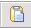
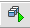
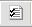
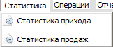
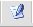

Автосалон
"Автосалон" (АИС учета продаж транспортных средств) - программа разработана на языке программирования Delphi. Используемые инструменты и технологии: Delphi, SQL, ADO, MS Access. В программе предусмотрена возможность создавать бэкап БД, печать различных отчетов, учет статистики прихода и расхода товара.
При запуске программы появляется окно авторизации пользователя, в котором необходимо выбрать пользователя, от имени которого будет выполнен вход в программу. У каждого пользователя имеется свой пароль и соответственно доступ к определенным частям программы.
После того как произведен вход в программу загружается главная (рабочая) форма приложения.

Пункт меню "Справочники" содержит справочники, в которых содержатся данные, постоянно необходимые для работы.
В первом справочнике "Договора" содержится информация о заключенных договорах.
В данном справочнике имеются функции добавления, редактирования, удаления, обновления всей информации.
В окне "Добавление" поле шифр заполняется автоматически, нужно заполнить поле контракт с какой фирмой или лицом будет заключаться контракт, выбрать даты с какого по какой период и указать, что это будет за контракт в поле инфо.
В окне "Редактирование" можно внести изменения либо поправки во все введенные данные и сохранить их, при этом шифр не будет изменен.
Любые введенные в справочник сведения можно удалять.
Также в справочнике предусмотрены поиск, сортировка данных и выборка по датам начала и окончания действия договора.
Следующий справочник "Контрагенты". В данном справочнике содержатся данные о клиентах и поставщиках. Все функции данного справочника и последующих справочников практически идентичны.
После контрагентов расположен справочник "Группы товаров". Данный справочник нужен для автоматизации работы программы. Здесь хранятся данные о марках автомобилей.
В справочнике "Сотрудники", содержатся данные о сотрудниках автосалона, которые непосредственно работают с данным приложением.
После справочника "Сотрудники" расположен справочник "Товар". Он является переходом от справочников к рабочим функциям программы. В этом справочнике можно просматривать все товары, хранящиеся на складе, информацию о них, и их количество.
При нажатии на кнопку "Прайс-лист"  появляются опции печати, при помощи, которых можно вывести на печать все необходимые данные.
При нажатии на кнопку "Товар на складе"  появляются уже другие опции печати. Здесь необходимо выбрать хотя бы одно поле и согласно нему представится весь товар на складе по выбранным критериям.
Перед тем как нажать на кнопку "Технические характеристики"  нужно выбрать какой-либо автомобиль из таблицы, тогда данные по автомобилю экспортируются в Ms Word.
Пункт меню "Статистика" 
Здесь можно увидеть полную статистику прихода товара, над которым можно осуществлять поиск, сортировку, и выводить отчет на печать в диапазоне дат.
Пункт меню "Статистика продаж". Здесь можно увидеть все проданные товары, над которым можно осуществлять поиск, сортировку и выводить отчет на печать, в диапазоне дат.
Пункт главного меню "Операции" используется для внесения изменений и регистрирования операций, которые проводятся с базой данных.
В окне "Поступление товара" ведется основная работа с новым завозом автомобилей.
Основной функцией данного окна является "Новый завоз" 
Поля "Артикул" и "Сумма" заполняются автоматически, как только будут введен все данные. Фото можно выбрать с расширением JPG либо BMP.
В окне "Реализация товара" ведется основная работа с продажей автомобилей.
Основной функцией данного окна является "Продать товар"
В окне "Продать товар" при нажатии кнопку "Товар в наличии" открывается справочник "Склад", в котором можно просмотреть товар, имеющийся на складе. Здесь же можно вывести какие-либо отчеты, либо кликнуть на нужный товар, и он автоматически добавится в окно "Продать товар".
Пункт меню "Отчеты" нужен, для того чтобы вывести нужные отчеты, сразу не открывая для этого другие окна, здесь имеются отчеты из справочника "Товар": "Прайс лист", и "Товар на складе"; отчеты из статистик "Книга продаж" и "Книга покупок".
Следующий пункт меню "Работа с базой данных" предназначен для администратора программы.
Этот пункт содержит функции архивации/разархивации базы данных, создания ее резервной копии.